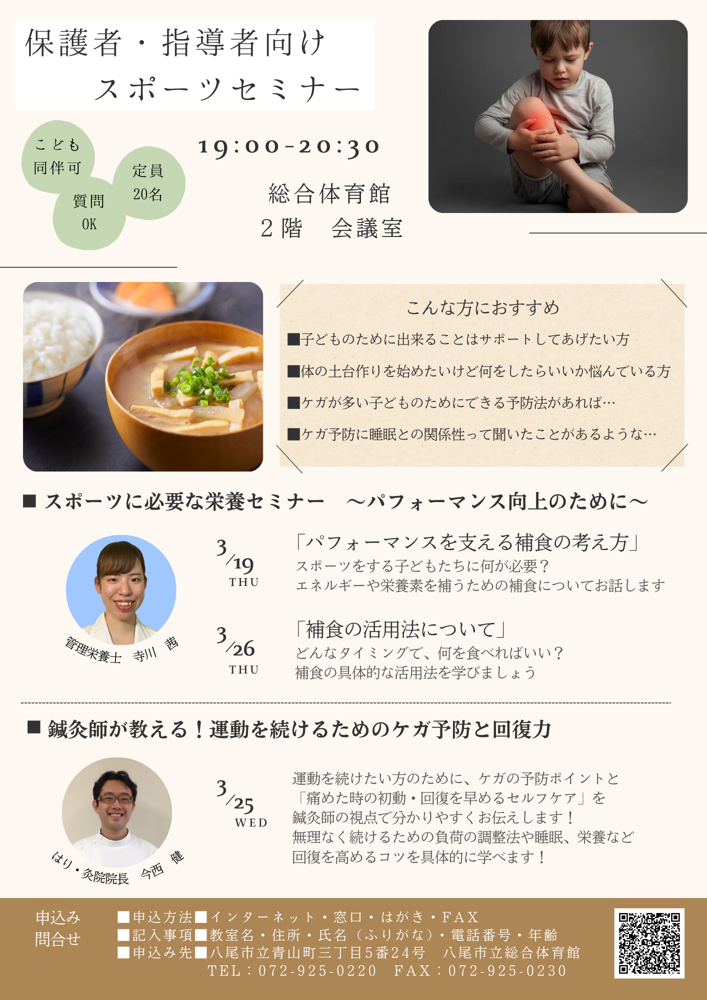
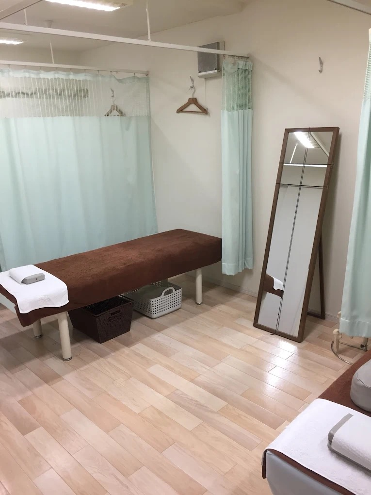
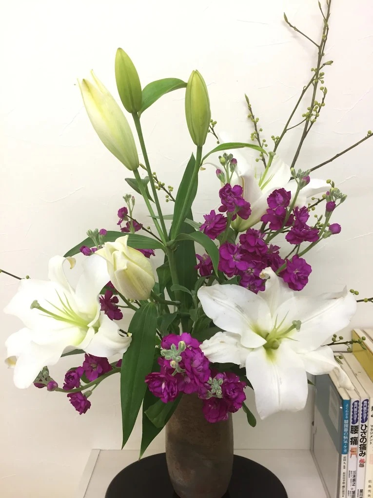

東洋医学・鍼灸・運動療法・分子栄養学で、根本からアプローチ。
初診は約90分。お一人おひとりに丁寧に向き合います。
院長一人のため、予約枠に限りがあります
症状の表面だけでなく、根本にある原因を丁寧に探ります。
「なぜ痛むのか」を一緒に探るために、初診は約90分かけてじっくりとお話を伺います。生活習慣・食事・睡眠・仕事内容まで、体の全体像を把握してから施術に入ります。
腰痛が腕の使い方から来ることも。局所だけでなく、全身のバランスを確認します。
伝統的な東洋医学の視点と、現代の医学・解剖学を融合した独自のアプローチ。
鍼灸師・柔道整復師の国家資格を両方保有。確かな知識と技術で対応します。
院長が責任を持って最初から最後まで担当。他のスタッフへの引き継ぎは一切なく、一人ひとりに集中した丁寧な施術を提供します。ひとり院長だからこそできる、質の高いケアです。
「痛くなったら行く」から「整えながら生きる」へ。
続けるからこそ見えてくる、身体の変化があります。
「施術の間隔が自然と空いていく」
それは、身体が自分で整えられるようになってきた証です。
どこに原因があり、生活の中のどこに負担がかかっていたのか。一緒に見つけていきます。
朝起きるのがラク、夜ぐっすり眠れる。そんな小さな変化を感じ始める時期です。
姿勢・呼吸・睡眠の質が自然と変わり、不調が起きにくい体へ。施術の間隔も空いていきます。
今の積み重ねが10年後・20年後の健康を支えます。自分の足で歩ける体を作っていきましょう。
痛む場所だけを治療しても、また同じところが痛くなる——不調の根本は別にあることがほとんどです。継続することで姿勢・身体の使い方・自律神経まで丁寧に整えていきます。
鍼灸・整体・運動療法を重ねるうちに、施術の間隔が自然に空いていきます。それは身体が自分で整えられるようになってきたサインです。
慢性的な不調を放置するほど、年齢を重ねてからの対処は難しくなります。定期的に整える習慣は「健康貯金」。将来の不調リスクを着実に減らします。
身体のこわばりがゆるみ、呼吸が深くなることで、気分の安定や睡眠の改善につながることがあります。「疲れたらここへ」と思える場所であり続けたい——そんな思いでお迎えしています。
週1回通われる方は、月1回の方より1回あたり3,000円お得に。
「続けたい」という気持ちに、料金面でもお応えしたい——
そんな想いで通院ペースに応じた料金設計にしています。

鍼灸師が教える！運動を続けるためのケガ予防と回復力
ケガの予防ポイントと「痛めた時の初動・回復を早めるセルフケア」を鍼灸師の視点で解説。無理なく続けるための負荷の調整法や睡眠・栄養なども具体的にお伝えしました。
セミナー参加者の方がブログに感想を書いてくださいました。
感想記事を読む →通院ペースに応じて料金が変わります
| 1ヶ月に1回 | 9,000円 |
| 3週間に1回 | 8,000円 |
| 2週間に1回 | 7,000円 |
| 1週間に1回 | 6,000円 |
| 週に2回 | 5,000円 |
整体・カイロコースは鍼灸治療費に +3,000円
再診料について 3ヶ月以上間隔が空いた方は、再診料として1,500円を頂戴しております。
通院ペースについては、お身体の状態や生活状況に合わせて無理のない範囲でご提案いたします。必要以上に通院をおすすめすることはありませんので、ご安心ください。
安心してご来院いただけるよう、丁寧にご案内します。
お電話（072-998-7474）またはLINE（ID: takeshityan）でご予約ください。「初めてで不安」でも大丈夫です。お気軽にご連絡ください。
症状・生活習慣・お仕事・食事・睡眠など、幅広くお聞きします。「こんなこと話していいのかな」と思うことも、ぜひ教えてください。
筋肉・関節・骨格・神経の状態を全身にわたって確認。症状の根本原因を探ります。
問診・検査の結果をもとに、最適な施術をご提供します。東洋医学・鍼灸・カイロプラクティックを組み合わせます。
施術後に結果と今後の通院ペースについてご説明します。無理のない範囲でご提案しますのでご安心ください。
初めての方からよくいただく質問をまとめました。
鍼灸の鍼は注射針と違い、非常に細いため「ちくっとする感覚がある程度」という方がほとんどです。「全然わからなかった」とおっしゃる方も多く、施術後は体がふっと軽くなる感覚を感じていただけます。初めての方には特に丁寧に説明しながら進めますので、ご安心ください。
はい、初診はお時間をいただいています。これは「なぜその症状が起きているのか」を丁寧に探るためです。症状だけでなく、生活習慣・仕事・食事・睡眠まで含めて確認することで、根本的な改善につながる施術ができます。「長くて大変」ではなく、「ちゃんと診てもらえた」と感じていただける時間です。
はい、むしろそのような方こそぜひご相談ください。「異常なし」とは画像検査などで問題が見つからなかった、ということです。鍼灸は東洋医学の視点から体全体のバランスを診るため、西洋医学の検査では見つからない不調にアプローチすることができます。長年の慢性症状でお悩みの方にも多くご来院いただいています。
症状の程度・期間・体質によって異なります。急性の症状（ぎっくり腰など）は数回で改善することもありますが、慢性化した症状は一般的に継続した通院が効果的です。初診後に現在の状態をご説明し、無理のない通院プランをご提案します。「必要以上に通わせない」ことを大切にしていますので、安心してご相談ください。
院長一人で対応しているため、事前のご予約をお願いしています。特に初診は90分のお時間をいただくため、予約なしではお待ちいただくことになります。LINEかお電話でご予約いただくとスムーズです。「空き状況を確認したい」だけでもお気軽にLINEでメッセージをください。
はい、駐車場があります。お車でお越しいただけます。最寄り駅からは少し距離がありますので、お車でのご来院をおすすめしています。ご不明な点はお気軽にお問い合わせください。


電話・LINEどちらでも受け付けています。「予約したい」だけでなく「少し話を聞いてほしい」でも大丈夫です。
「どこに相談したらいいか分からない」という段階でも構いません。症状のこと、初診のこと、何でもお聞きします。
| 院名 | 今西健はり・灸院 |
|---|---|
| 住所 | 〒581-0832 大阪府八尾市堤町2-30-59 |
| 電話 | 072-998-7474 |
| 診療時間 |
【平日】 午前 9:30〜12:30
午後 15:00〜20:00（最終受付19:00）
【土曜】 午前 9:00〜12:00
午後 14:00〜16:00
|
| 休診日 | 木曜午後・日曜・祝日 |
| 駐車場 | あり |